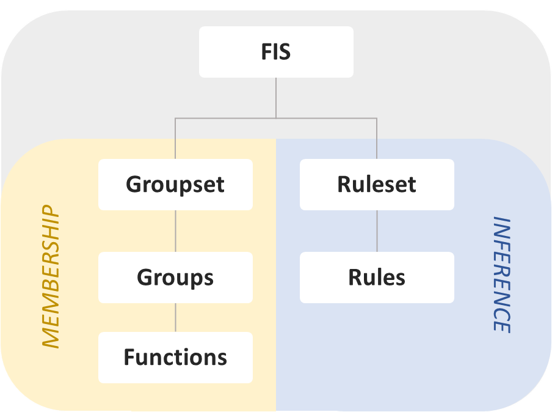

Guide: FIS¶
Contents
Overview¶
A fuzzy inference system (FIS) is the fundamental object in HotFIS. They hold the definitions of fuzzy sets and rules used in both Mamdani and Takagi-Sugeno inference.
The structure of the FIS is as follows:
Membership¶
Membership functions compute the degree to which an input belongs to a fuzzy sets. These functions are grouped together as the first of two components that comprise a FIS.
FuzzyFunc¶
HotFIS is built upon functions that compute an input’s degree of membership to implicitly defined fuzzy sets. They are instantiated with a name, list of parameters, and how input should be used to calculate membership.
See Guide: Functions for more info on instantiation.
Example:
fn = FuzzyFunc("hot", [-1, 0, 1], "triangular")
fn.plot(-2, 2)
plt.show()

FuzzyGroup¶
Multiple membership functions are stored in named groups that save domain limits for Mamdani evaluation and visualization.
Example:
group = FuzzyGroup("temperature", 0, 100, [
FuzzyFunc("cold", [30, 40], "leftedge"),
FuzzyFunc("warm", [30, 40, 60, 70], "trapezoidal"),
FuzzyFunc("hot", [60, 70], "rightedge")
])
group.plot()
plt.show()
FuzzyGroupset¶
Membership function groupsets form one of the two main components of a FIS. They maintain multiple function groups for easy evaluation.
Example:
groupset = FuzzyGroupset([
FuzzyGroup("temperature", 0, 100, [
FuzzyFunc("cold", [30, 40], "leftedge"),
FuzzyFunc("warm", [30, 40, 60, 70], "trapezoidal"),
FuzzyFunc("hot", [60, 70], "rightedge")
]),
FuzzyGroup("heater", 0.0, 1.0, [
FuzzyFunc("off", [0.1, 0.2], "leftedge"),
FuzzyFunc("medium", [0.1, 0.2, 0.8, 0.9], "trapezoidal"),
FuzzyFunc("on", [0.8, 0.9], "rightedge")
]),
])
Inference¶
The other component of a FIS is a ruleset. Fuzzy rules determine membership of inputs to the function groupset’s output functions.
FuzzyRule¶
Fuzzy rules are parsed from English using the names of membership functions and membership function groups. They can evaluate input to determine output.
Multiple antecedents connected by ‘and’ and ‘or’ operators are supported.
Example:
rule = FuzzyRule("if temperature is hot then heater is off")
FuzzyRuleset¶
Fuzzy rulesets act as a container of fuzzy rules and the second major component of a FIS.
Example:
ruleset = FuzzyRuleset([
FuzzyRule("if temperature is cold then heater is on"),
FuzzyRule("if temperature is warm then heater is medium"),
FuzzyRule("if temperature is hot then heater is off")
])
FIS¶
Once both a groupset and ruleset are defined the FIS can be created.
fis = FIS(groupset, ruleset)
After creating a FIS, components can be retrieved and manipulated.
hot_fn = fis.groupset["temperature"]["hot"]
Input can be also be evaluated for memberships, fuzzified Mamdani output, and TSK output. See examples like Example: Mamdani and Example: Takagi-Sugeno for basic illustrations of evaluation, defuzzification, and visualization.
# Evaluation
membership_output = fis.eval_membership(vals)
mamdani_output = fis.eval_mamdani(vals)
tsk_output = fis.eval_tsk(vals)

{kind=link}
{kind=link}